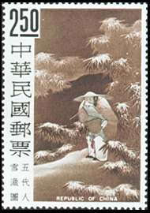
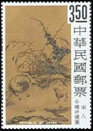
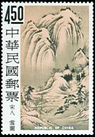
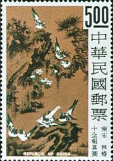
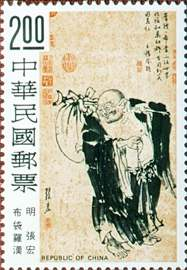
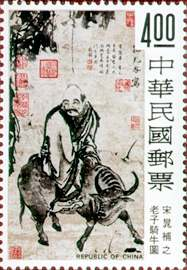
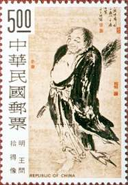
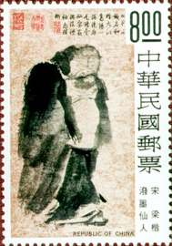

Paintings From the Palace Museum,
Sung Dynasty
(Issue of 1966)
Issue date: May 20, 1966. Perforation: 13. Sheet composition: 10 x 5. Dimension (mm): 36 x 51. Process: Photogravure. Photographer: Liu Pao-chin. Paper: Photogravure stamp paper. Printer: Printing Bureau of the Ministry of Finance, Japan.
Four ancient Chinese painting masterpieces were selected from the reach collection of the Palace Museum.
 |
 |
 |
 |
$2.50. Fishing on a Snowy Day, by an unidentified artist of the Five
Dynasties (AD 907-960). The original painting is in color on silk, measuring
32.7 ¡x 62.1 cm.
$3.50. Calves on the Plain, by an unidentified artist of the Sung dynasty (AD
960-1126). The original painting is in color on silk, measuring 54.2 x 97 cm.
$4.50. Snowscape, by Chu Yen, a monk of the Sung dynasty. The original painting
is a hanging scroll on silk in ink, measuring 52.5 x 103.6 cm. Chu Yen ranks
among the four most famous artists of the Northern Sung dynasty.
$5.00. Magpies, by Lin Ch'un of the Southern Sung dynasty. The literal
translation of the title of the painting is: Ten Harbingers of Glad News. The
original painting is a hanging scroll on silk in color, measuring 97.6 x 173.2
cm.
Ancient Chinese Figure
Paintings Postage Stamps
(Issue of 1975)
Issue date: June 18, 1975. Perforation: 12. Sheet composition: 10 x 5. Dimension (mm): 35.96 x 51.46. Process: Photogravure. Photographer: Wu Cheng-fang. Paper: Photogravure stamp paper. Printer: Hélio Courvoiser S.A., Switzerland.
A set of Ancient Chinese Figure Paintings Postage Stamps was released inn 1975 in order to promote the Chinese Cultural Renaissance Movement.
 |
 |
 |
 |
$2.00. Cloth-bag Lohan, by Chang Hung (1577-1688), Ming dynasty. Ink on
paper. Size: 30.3 cm x 60 cm. Hanging Scroll.
$4.00. Lao-tzu Riding a Buffalo, by Chao Pu-chih (1053-1110), Sung dynasty. Ink
on paper. Size 20.4 cm x 50.6 cm. Hanging Scroll.
$5.00. Portrait of Shih-te, by Wang Wen (1497-1576), Ming dynasty. Ink on paper.
Size 54.4 cm x 117.8 cm. Hanging Scroll.
$8.00. Splashed-ink Immortal, by Liang Kai (active during the early 13th
century), Sung dynasty. Ink on paper. Size 27.7 cm x 48.7 cm. An album leaf in
the album Ming-hua lin-lang tse.